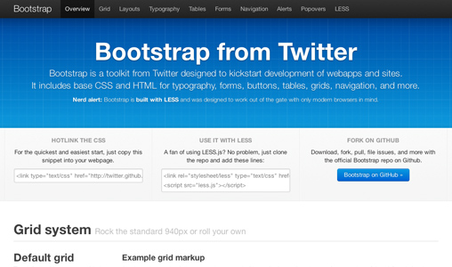

Responsive design with CSS frameworks
Twitter Bootstrap
ZURB Foundation
Created by Stanislav Kurinec / @stenlyk
About me and technology
- I started with HTML 15th year ago
- I learn basic of javascript and css (first browser I made website IE5)
- PHP
- Mootols then I switch to JQUERY & ZEPTO
- Blueprint CSS Framework
- Zend Framework then I switch to Nette
- in 2010 run first website on HTML5
- Pspad > Aptana > Netbeans > Vim > Sublime Text
- Kedno UI from Telerik
- ZURB Foundation 2 - 4
- SASS & Compass
- these days I explore Knockout JS & Typescript & HTML5
Before start
CSS Frameworks why should use them?
It's something you can do it by your self.
But ...

Advantages of CSS Frameworks
- You increase your productivity and avoid common mistakes.
- You normalize your code/class base.
- You have a better workflow within a team.
- You gain an optimal browser-compatibility.
- You have a clean, well-structured and complete code.
Disadvantages of CSS Frameworks
- You need time to fully understand the framework.
- You might inherit someone’s bugs or mistakes.
- You develop sites upon a framework, not upon the solid knowledge of CSS.
Twitter Bootstrap
In 2011 Twitter announce lunch of Bootstrap 1.0.
About Bootstrap
- Build by LESS
- Have unofficial version of sass by thomas-mcdonald or jlong
- Large user base
- Grids: Fluid and fixed
- UI tools: Lots of widgets; good for rapid prototyping
- Built by Twitter as a style guide for internal tools.
Browser support
- Desktop
- Chrome
- Firefox
- Safari
- Opera
- IE7+
- Mobile
- "tablets and smartphones"
Grids and Responsiveness
- Base width:
- Fluid and fixed (724px, 940px, 1170px; below 767px are single column and vertically stacked)
- Columns:
- 12
- Columns syntax:
- .span1 > .span12
- Container syntax:
- .container or .container-fluid
Cometary
Bootstrap 2.3x is the last release cycle before 3.0.
Bootstrap is a full featured solution for making a responsive website. Out of the box, styling is minimal but elegant for making prototypes.
The default bootstrap UI can be modified by using LESS. The process of setting up LESS with Bootstrap is vague in documentation and took sometime to figure out.
The component and plugin library is large enough and community support continues to grow. Overall, Bootstrap is a great framework to streamline the process of development.
ZURB Foundation
In 2011 ZURB announce lunch of Foundation 2.0.
About Foundation
Browser support
- Desktop
- Chrome
- Firefox
- Safari
- Opera
- IE9+
- Mobile
- iOS (iPhone)
- iOS (iPad)
- Android 2, 4 (Phone)
- Android 2, 4 (Tablet)
- Windows Phone 7+
- Surface
Cometary
Foundation 4 was rewritten as a mobile-first implementation, and has a slightly different grid syntax.
This version provides access to both a small and large grid, so your HTML syntax may become more verbose, but also more flexible.
IE8 is no longer supported and the typography has changed from px- to em-based.
There is unofficial way how to support IE8 at least in grid
Transition Styles
You can select from different transitions, like:
Cube -
Page -
Concave -
Zoom -
Linear -
Fade -
None -
Default
Themes
Reveal.js comes with a few themes built in:
Sky -
Beige -
Simple -
Serif -
Night -
Default
* Theme demos are loaded after the presentation which leads to flicker. In production you should load your theme in the <head> using a <link>.
Global State
Set data-state="something" on a slide and "something"
will be added as a class to the document element when the slide is open. This lets you
apply broader style changes, like switching the background.
Custom Events
Additionally custom events can be triggered on a per slide basis by binding to the data-state name.
Reveal.addEventListener( 'customevent', function() {
console.log( '"customevent" has fired' );
} );
Slide Backgrounds
Set data-background="#007777" on a slide to change the full page background to the given color. All CSS color formats are supported.
Image Backgrounds
<section data-background="image.png">Repeated Image Backgrounds
<section data-background="image.png" data-background-repeat="repeat" data-background-size="100px">Background Transitions
Pass reveal.js the backgroundTransition: 'slide' config argument to make backgrounds slide rather than fade.
Background Transition Override
You can override background transitions per slide by using data-background-transition="slide".
Clever Quotes
These guys come in two forms, inline:
“The nice thing about standards is that there are so many to choose from”
and block:
“For years there has been a theory that millions of monkeys typing at random on millions of typewriters would reproduce the entire works of Shakespeare. The Internet has proven this theory to be untrue.”
Pretty Code
function linkify( selector ) {
if( supports3DTransforms ) {
var nodes = document.querySelectorAll( selector );
for( var i = 0, len = nodes.length; i < len; i++ ) {
var node = nodes[i];
if( !node.className ) ) {
node.className += ' roll';
}
};
}
}
Courtesy of highlight.js.
Intergalactic Interconnections
You can link between slides internally, like this.
Fragmented Views
Hit the next arrow...
... to step through ...
any type- of view
- fragments
Fragment Styles
There's a few styles of fragments, like:
grow
shrink
roll-in
fade-out
highlight-red
highlight-green
highlight-blue
Spectacular image!

Export to PDF
Presentations can be exported to PDF, below is an example that's been uploaded to SlideShare.
Take a Moment
Press b or period on your keyboard to enter the 'paused' mode. This mode is helpful when you want to take distracting slides off the screen during a presentation.